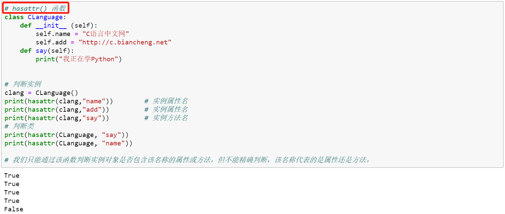

【本文结构】
- 0、参考文献
- 1、hasattr()、getattr()、setattr()函数用法详解
- 2、issubclass()、isinstance() 函数 —— 检查类型
- 3、类的特殊成员
- 4、重载运算符
- 5、Python 迭代器
- 6、Python 生成器
- 7、Python @函数装饰器
【0 参考文献】
函数 | 说明 | 实例程序 |
hasattr(obj, name) | 判断类或实例是否包含该名称的属性或方法。 obj 指的是某个类或实例对象， name 表示指定的属性名或方法名。 该函数会将判断的结果（True 或者 False）作为返回值反馈回来。 我们只能通过该函数判断类或实例是否包含该名称的属性或方法，但不能精确判断，该名称代表的是属性还是方法。 |  |
getattr(obj, name [, default]) | 获取某个类或实例的属性的值或方法的状态信息。 obj 表示指定的类实例对象， name 表示指定的属性名， default 是可选参数，用于设定该函数的默认返回值，即当函数查找失败时，如果不指定 default 参数，则程序将直接报 AttributeError 错误，反之该函数将返回 default 指定的值。 |   |
setattr(obj, name, value) | 它最基础的功能是修改类或者实例中的成员的值。 它还可以实现为类或实例动态地添加变量或者方法。 |     |
函数 | 说明 | 示例程序 |
 | ||
如果 object 不是给定类型的对象，函数将总是返回 False。 如果 classinfo 是类型对象元组（或由其他此类元组递归组成的元组），
|  |
- 注意：这两个函数的 classinfo 参数如果是元组，则第一个参数只要满足元组内的任何一个元素（不必满足所有元素），就会返回 True。
- issubclass() 和 isinstance() 两个函数的用法差不多，区别只是：
- issubclass() 的第一个参数是类名，用于判断是否为子类。
- isinstance() 的第一个参数是变量，用于判断是否为该类或子类的实例。
- Python 为所有类都提供了一个 __bases__ 属性，通过该属性可以查看该类的所有直接父类，该属性返回所有直接父类组成的元组。（在下一节介绍）
- Python 还为所有类都提供了一个 __subclasses__() 方法，通过该方法可以查看该类的所有直接子类，该方法返回该类的所有子类组成的列表。（在下一节介绍）
【3 类的特殊成员】
- 类的特殊成员：Python 类中，凡是以双下划线 "__" 开头和结尾命名的成员（属性 attribute 和 方法method），都被称为类的特殊成员。
- Python 类中的特殊成员，其特殊性类似 C++ 类的 private 私有成员，即不能在类的外部直接调用（一般不建议），但允许借助类中的普通方法调用甚至修改它们。如果需要，还可以对类的特殊方法进行重写，从而实现一些特殊的功能。
- 下表列出了一些常用的类的特殊成员
序号 | 类特殊成员名称 | 实现功能 | 触发调用的形式 | 使用说明 |
__new__() | 创建类实例。 是一种负责创建类实例的静态方法，它无需使用 staticmethod 装饰器修饰，且该方法会先于 __init__() 初始化方法被调用。 | 在 __init__() 之前的实例创建 |   | |
2 | __init__() | 构造函数。 构造当前类的实例化对象。 | 实例初始化： instance = Class(args) | |
__repr__() __str__() | 显式对象基本信息。 默认情况下，__repr__() 会返回和调用者有关的 “类名+object at+内存地址”信息。当然，我们还可以通过在类中重写这个方法，从而实现当输出实例化对象时，输出我们想要的信息。 | print(instance) repr(instance) str(instance) instance.__repr__() |  | |
__del__() | 析构函数。 功能正好和 __init__() 相反，其用来销毁实例化对象。 需要额外说明的是，如果我们重写子类的 __del__() 方法（父类为非 object 的类），必须显式调用父类的 __del__() 方法，这样才能保证在回收子类的实例时，其占用的资源（可能包含继承自父类的部分资源）能被彻底释放。 （参考文献还讲到 Python 垃圾回收GC） | 实例回收 del instance instance.__del__() |  | |
__dir__() | 返回一个包含有所有属性名和方法名的有序列表。 内置函数 dir() 的内部实现，其实是在调用参数对象 __dir__() 方法的基础上。 | instance.__dir__() dir(instance) dir(Class) Class.__dir__() |   | |
__call__() | 该方法的功能类似于在类中重载 () 运算符，使得类实例对象可以像调用普通函数那样，以“对象名()”的形式使用。 Python 中，凡是可以将 () 直接应用到自身并执行，都称为可调用对象。可调用对象包括：
对于可调用对象，实际上“名称()”可以理解为是“名称.__call__()”的简写。所以可调用对象有两种调用方式：
|  通过 __call__() 弥补 hasattr() 的短板：  | ||
__subclasses__() | 该方法可以查看该类的所有直接子类，并返回该类的所有子类组成的列表。 |  | ||
__bases__ | 该属性可以查看该类的所有直接父类，并返回所有直接父类组成的元组。 |  | ||
__dict__ | __dict__ 属性可以用类或者实例来调用：
|   | ||
10 |
- Python 中的各个序列类型，每个类型都有其独特的操作方法，例如列表类型支持直接做加法操作实现添加元素的功能，字符串类型支持直接做加法实现字符串的拼接功能，也就是说，即使同样的 加法运算符 对于不同序列类型的意义是不一样的，这是怎么做到的呢？其实，在 Python 内部使用了一个叫作“重载运算符”的技术来实现不同运算符所对应的操作。
- 重载运算符，指的是在类中定义并实现一个与运算符对应的处理方法，这样当类对象在进行运算符操作时，系统就会调用类中相应的方法来处理。 下表列出了 Python 常用重载运算符：
序号 | 重载运算符 | 实现功能 | 触发调用形式 | 示例程序 |
1 | __new__ | 创建类，在 __init__ 之前创建对象 | 下面这个例子中，自定义 MyClass 类中重载了 repr、str、<、+ 运算符，并用 MyClass 实例化了两个对象 Anna 和 Gray。 通过将 Anna 进行 repr、str 运算，从输出结果中可以看到，程序调用了重载的操作符方法 __repr__ 和 __str__。而令 Anna 和 Gray 进行 < 号的比较运算以及加法运算，从输出结果中可以看出，程序调用了重载 < 号的方法 __lt__ 和 __add__ 方法。  另一个示例： | |
2 | __init__ | 类的构造函数，其功能是创建类对象时做初始化工作。 | ||
3 | __del__ | 析构函数，其功能是销毁对象时进行回收资源的操作 | ||
4 | __add__ | 加法运算符 +，当类对象 X 做例如 X+Y 或者 X+=Y 等操作，内部会调用此方法。 但如果类中对 __iadd__ 方法进行了重载，则类对象 X 在做 X+=Y 类似操作时，会优先选择调用 __iadd__ 方法。 | ||
5 | __radd__ | 当类对象 X 做类似 Y+X 的运算时，会调用此方法。 | ||
6 | __iadd__ | 重载 += 运算符，也就是说，当类对象 X 做类似 X+=Y 的操作时，会调用此方法。 | ||
7 | __or__ | “或”运算符 |，如果没有重载 __ior__，则在类似 X|Y、X|=Y 这样的语句中，“或”符号生效。 | ||
8 | __repr__，__str__ | 格式转换方法，分别对应函数 repr(X)、str(X) | ||
9 | __call__ | 函数调用，类似于 X(*args, **kwargs) 语句 | ||
10 | __getattr__ | 点号运算，用来获取类属性 | ||
11 | __setattr__ | 属性赋值语句，类似于 X.any=value | ||
12 | __delattr__ | 删除属性，类似于 del X.any | ||
13 | __getattribute__ | 获取属性，类似于 X.any | ||
14 | __getitem__ | 索引运算，类似于 X[key]，X[i:j] | ||
15 | __setitem__ | 索引赋值语句，类似于 X[key], X[i:j]=sequence | ||
16 | __delitem__ | 索引和分片删除 | ||
17 | __get__, __set__, __delete__ | 描述符属性，类似于 X.attr，X.attr=value，del X.attr | ||
18 | __len__ | 计算长度，类似于 len(X) | ||
19 | __lt__，__gt__，__le__，__ge__，__eq__，__ne__ | 比较，分别对应于 <、>、<=、>=、=、!= 运算符。 | ||
20 | __iter__， __next__ | 迭代环境下，生成迭代器与取下一条，类似于 I=iter(X) 和 next() | ||
21 | __contains__ | 成员关系测试，类似于 item in X | ||
22 | __index__ | 整数值转换，类似于 hex(X)，bin(X)，oct(X) | ||
23 | __enter__，__exit__ | 上下文管理器，在对类对象执行类似 with obj as var 的操作之前，会先调用 __enter__ 方法，其结果会传给 var；在最终结束该操作之前，会调用 __exit__ 方法（常用于做一些清理、扫尾的工作） | ||
- 列表（list）、元组（tuple）、字典（dict）、集合（set）这些 序列式容器 有一个共同的特性，它们都支持使用 for 循环遍历存储的元素，都是可迭代的，因此它们又有一个别称，即迭代器。
- 从字面来理解，迭代器指的就是支持迭代的容器，更确切的说，是支持迭代的容器类对象，这里的容器：
- 可以是列表、元组等这些 Python 提供的基础容器，
- 也可以是自定义的容器类对象，只要该容器支持迭代即可。
- 迭代器实现方法一：自定义一个实现迭代器的容器类对象，该类中必须实现如下 2 个方法：
- __next__(self)：返回容器的下一个元素。
- __iter__(self)：该方法返回一个迭代器（iterator）。

- 迭代器实现方法二：iter() 函数
- iter(object [, sentinel])
- obj 必须是一个可迭代的容器对象，而 sentinel 作为可选参数，如果使用此参数，要求 obj 必须是一个可调用对象。
- 如果没有第二个实参，object 必须是支持迭代协议（有 __iter__() 方法）的集合对象，或必须支持序列协议（有 __getitem__() 方法，且数字参数从 0 开始）。如果它不支持这些协议，会触发 TypeError。
- 如果有第二个实参 sentinel，那么 object 必须是可调用的对象。这种情况下生成的迭代器，每次迭代调用它的 __next__() 方法时都会不带实参地调用 object；如果返回的结果是 sentinel 则触发 StopIteration，否则返回调用结果。

用法一 | 用法二 |
常用的是仅传递第 1 个参数的 iter() 函数，通过传入一个可迭代的容器对象，我们可以获得一个迭代器，通过下列方式实现迭代：
  | 如果使用 iter() 函数的第 2 个参数 sentinel，则要求第一个 obj 参数必须传入可调用对象（可以不支持迭代），这样当使用返回的迭代器调用 __next__() 方法时，会通过执行 obj() 调用 obj 的 __call__() 方法，如果 __call__() 方法的返回值和 sentinel 的值相同，则输出 StopInteration 异常；反之，则输出 __call__() 方法的返回值。  |
- 另一个示例：迭代器实现字符串的逆序输出
- 迭代器本身是一个底层的特性和概念，在程序中并不常用，但它为生成器这一更有趣的特性提供了基础。